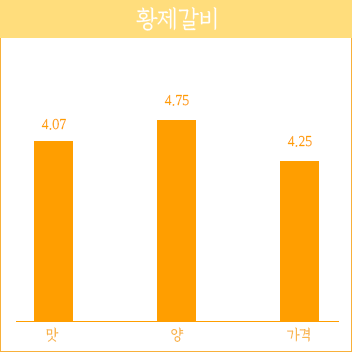

갈비 냉면 시장 최초로 성공하여
우리동네 No.1 브랜드로!

해피브릿지 가족 여러분,
2017년 한 해 동안 임직원 여러분의 하고자 하신 일이 모두 잘 되셨으리라 믿습니다.
2017년 해피브릿지 협동조합에는 많은 일 들이 있었습니다.
특히 예상치 못한 일이 발생하여 뜻하지 않은 위기의식 속에 연말연시를 보냈습니다.
하지만 우리구성원들은 어려운 상황속에서도 의기투합 하여 의연하게 대처해 나가는 모습을 보여주었고 ,
이를 보면서 해피브릿지의 미래가 밝고 희망이 있다는 낙관적인 생각을 할 수 있었습니다.
우리가 해피브릿지의 지속가능함을 만들어 내고 대한민국에서 직원 협동조합으로 성공하는 사례를 만들어 나가고 있는 것은 여러분들이 존재하고 있기 때문입니다.
저는 그것이 너무나 자랑스럽습니다.
2018년 새해, 해피브릿지는 또 한걸음 나아갈 것 입니다.
저는 2년 전에 도전.학습.신뢰 라는 키워드를 제시한 바 있습니다.
고객중심의 사고를 바탕으로 목표를 정하여 한마음으로 협업하는 '기업가 정신’이 살아 있는 해피브릿지 협동조합에 대한 기대가 있습니다.
이를 위해 던진 키워드가 스스로 도전하고 학습하며 서로에 대한 신뢰가 바탕이 되었으면 하는 바람 이었고 이를 위해 노력해 주신 구성원 여러분께 감사드립니다.
이제는 해피브릿지와 함께 하는 구성원들의 행복지수를 높여야 할 때 라고 생각 합니다.
이를 위해 2018년에 해야 할 많은 일들이 있습니다.

2017년 한 해 동안 임직원 여러분의 하고자 하신 일이 모두 잘 되셨으리라 믿습니다.
2017년 해피브릿지 협동조합에는 많은 일 들이 있었습니다.
특히 예상치 못한 일이 발생하여 뜻하지 않은 위기의식 속에 연말연시를 보냈습니다.
하지만 우리구성원들은 어려운 상황속에서도 의기투합 하여 의연하게 대처해 나가는 모습을 보여주었고 ,
이를 보면서 해피브릿지의 미래가 밝고 희망이 있다는 낙관적인 생각을 할 수 있었습니다.
우리가 해피브릿지의 지속가능함을 만들어 내고 대한민국에서 직원 협동조합으로 성공하는 사례를 만들어 나가고 있는 것은 여러분들이 존재하고 있기 때문입니다.
저는 그것이 너무나 자랑스럽습니다.
2018년 새해, 해피브릿지는 또 한걸음 나아갈 것 입니다.
저는 2년 전에 도전.학습.신뢰 라는 키워드를 제시한 바 있습니다.
고객중심의 사고를 바탕으로 목표를 정하여 한마음으로 협업하는 '기업가 정신’이 살아 있는 해피브릿지 협동조합에 대한 기대가 있습니다.
이를 위해 던진 키워드가 스스로 도전하고 학습하며 서로에 대한 신뢰가 바탕이 되었으면 하는 바람 이었고 이를 위해 노력해 주신 구성원 여러분께 감사드립니다.
이제는 해피브릿지와 함께 하는 구성원들의 행복지수를 높여야 할 때 라고 생각 합니다.
이를 위해 2018년에 해야 할 많은 일들이 있습니다.
첫째, 급여제도의 재설계
2014년에 우리가 함께 만든 급여제도의 변화 적용이 올해로 마무리 됩니다. 경제적 만족도는 개인마다 다르지만
가급적 많은 분들의 필요와 요구를 만족 시킬수 있는 제도를 만들 계획 입니다.
가급적 많은 분들의 필요와 요구를 만족 시킬수 있는 제도를 만들 계획 입니다.
둘째, 사옥이전 추진
우리 구성원이 장시간 머무는 공간은 매우 중요합니다.
경제적인 부분 뿐만이 아니라 보다 나은 환경속에서 근무 할 수 있도록 새로운 공간을 만들고자 합니다.
경제적인 부분 뿐만이 아니라 보다 나은 환경속에서 근무 할 수 있도록 새로운 공간을 만들고자 합니다.
셋째, 복지제도의 보완
구성원이 늘어감에 따라 안전사고의 예방이 필요한 때 입니다. 이를 위해 각 사업단위의 책임자와 대책을 마련할 것이며 전사적으로는
단체 상해보험 가입 등의 방안을
시행 하겠습니다.
시행 하겠습니다.
해피브릿지 협동조합 임직원 여러분,
올해도 행복한 일터를 만들어 나가기 위해 우리 함께 한걸음 한걸음 노력해야 합니다.
새해 복 많이 받으시고, 가정에 행복과 건강이 함께 하길 바랍니다.
감사합니다.
해피브릿지 2대 이사장 최철
올해도 행복한 일터를 만들어 나가기 위해 우리 함께 한걸음 한걸음 노력해야 합니다.
새해 복 많이 받으시고, 가정에 행복과 건강이 함께 하길 바랍니다.
감사합니다.
해피브릿지 2대 이사장 최철
화평동 핵심상품 고객 만족도

5점 만점에 평균 4점 대의 분포도로 맛과 가격에서 고객 만족이 입증 되었습니다.
"마음을 담는 큰그릇"
어머니의 마음을 담아 음식에 정성과 넉넉함을
제공하는 화평동왕냉면 입니다.
LOGO
둥근 원은 정성을 담는 그릇을 나타냄과 동시에 No1 을 표방한다.
안의 3가지 색은 식자재의 자연주의 및 우리의 풍성한 들녘,
냉면이 연상되는 선은 나이테와 같이 역사성을 나타내고 외식브랜드로 젓가락을
정점에 찍어 우리나라의 맛과 멋을 알리려는 의지를 표현했다.
화평동 왕냉면의 유래
개향초기 3대 냉면으로 불리는 함흥냉면, 평양냉면, 인천냉면이 있었다. 이 중 인천냉면을 모티브로 한 화평동왕냉면의 역사는 인천개항기까지 거슬러 올라간다. <인천석금>에서 묘사된 내용을 따르면 서울 등 먼거리까지 자전거에 냉면목판을 싣고 배달한 시절도 있었고 그모습이 마치 자전거 경주 대회를 여는 듯 했다고 기록되어 있다.
도보 이용 시
장한평역 4번출구에서 직진
대중교통 이용 시
광역버스 12번 지역버스 20번 브릿지하차
자차 이용 시
고속도로